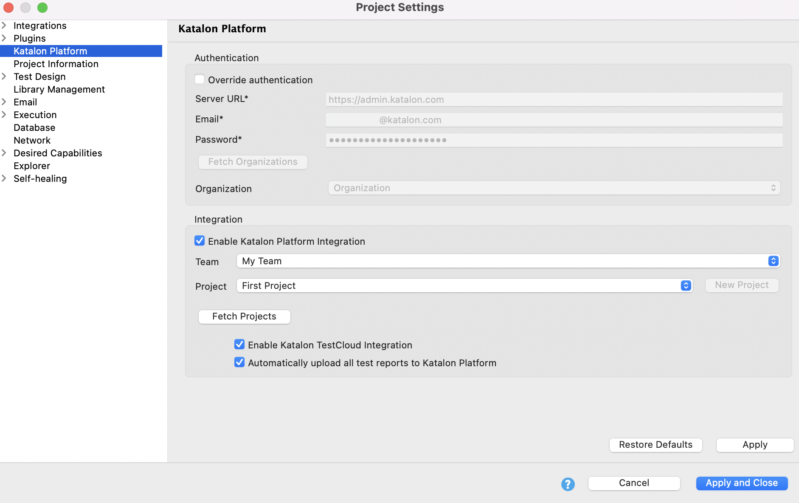
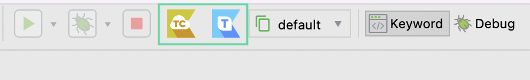

Enable Katalon Platform integration in Katalon Studio
- Katalon Studio version 8.6.0 onwards.
- Open your project in Katalon Studio.
- Go to Project > Settings > Katalon Platform.
Alternatively, you can click the Katalon TestOps or Katalon TestCloud icons from the main toolbar.

- Tick on the Enable Katalon Platform integration checkbox.This option automatically enables Katalon TestCloud integration and uploads all test reports to Katalon TestOps. You can unselect one of the options based on your preference.Once the connection is successful, Katalon Studio fetches all Teams and Projects from the Organization you belong to.Note:
The settings will apply for TestOps and TestCloud. If you want to execute tests with TestCloud and upload test reports to TestOps, you need to choose the Organization that has an active TestCloud subscription or trial. See Subscribe to TestCloud.
- Choose your Team and Project in a dropdown menu of the Team and Project sections.If you are the Owner or Admin, you can also click New Project to create a new project.
- Click Apply & Close.